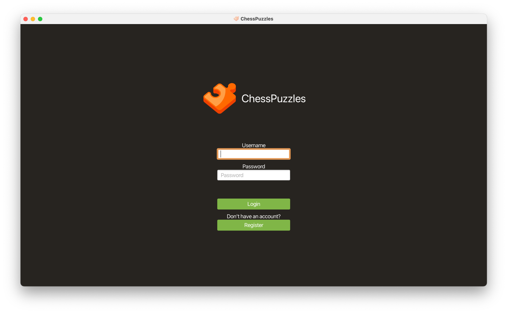
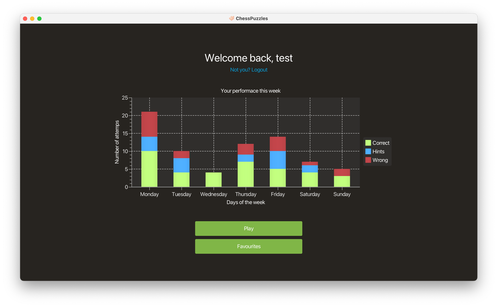
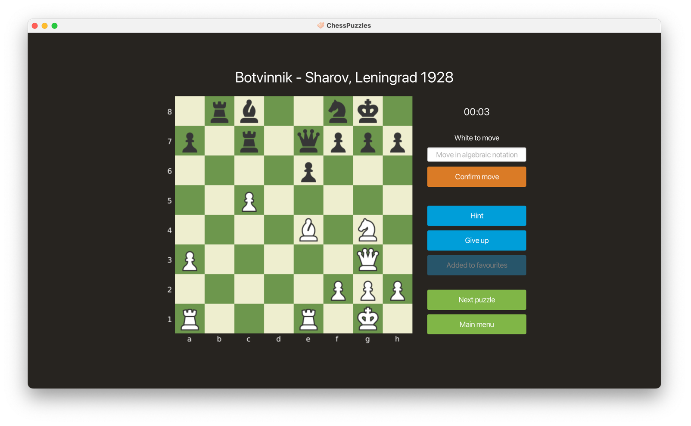
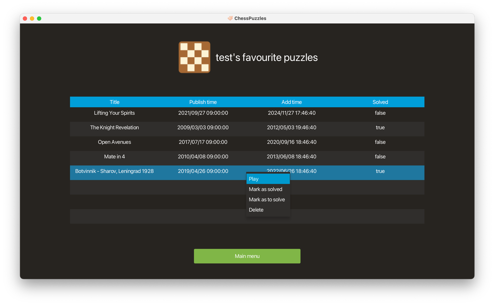

ChessPuzzles is a Java 11 Spring application which wraps chess.com's puzzle api for a JavaFX client
Check out the full code on GitHub Client side   The board is an image (more on that later), the user writes the move he thinks is best using algebraic chess notation, if he can't find it he can ask for an hint (the piece to move) or give up and see the solution  Users can also add puzzles to favourites and play them again later  Server side The MySQL database stores users, attemps and favourite puzzles (via json serialization) and is automatically created and populated by the Java Persistence Api with the values present in the json files inside the resources/init folder The endpoints of chess.com's api used by the spring application are:
GET /puzzles/random
GET /puzzles/draw?fen=...&board=...&pieces=...
POST /users/login
POST /users/register
GET /users/{userId}/favourites/all
POST /users/{userId}/favourites/{favouriteId}/delete
POST /users/{userId}/favourites/{favouriteId}/mark-as-solved
POST /users/{userId}/favourites/{favouriteId}/mark-as-to-solve
GET /users/{userId}/attemps/afer?timestamp=...
POST /users/{userId}/attemps/add
Note: Security was NOT a priority in this project (at least passwords are hashed)
Go back to all the projects